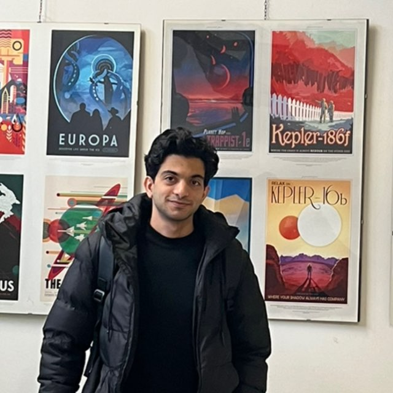
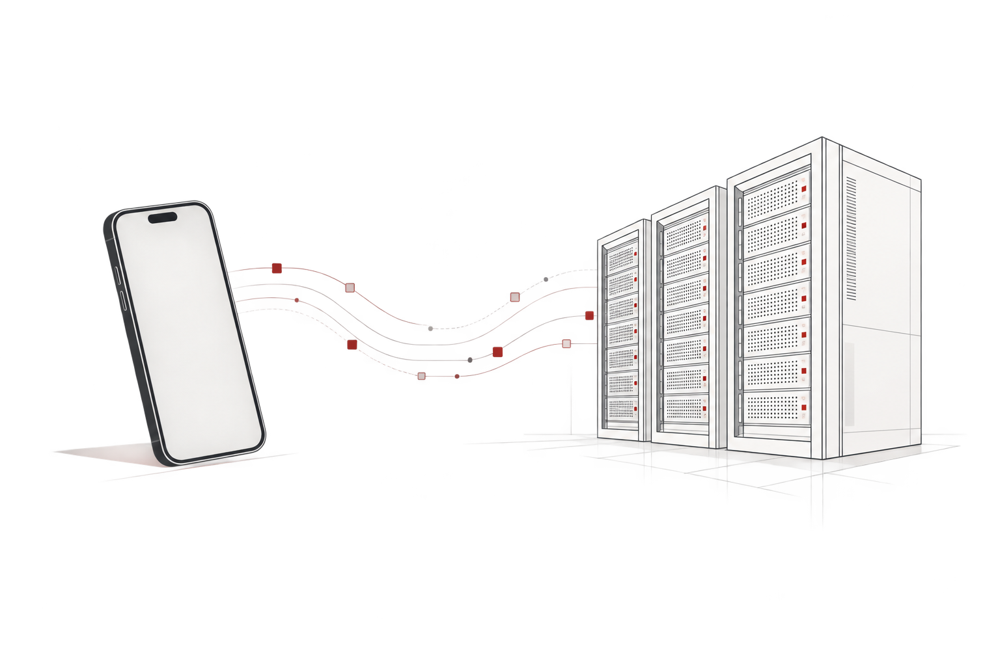

Computational Cosmology & Large-Scale Structure
Computational approaches to cosmology and the study of large-scale cosmic structure.
ASTROPHYSICS & COSMOLOGY
Master's student in Astrophysics & Cosmology at the University of Bologna, working across observational astronomy, cosmological simulations, scientific computing, and high-performance computing.

I work at the intersection of physics, computation, and astronomical data.
I am a Master's student in Astrophysics & Cosmology at the University of Bologna, with research experience in observational astronomy, cosmological simulations, numerical methods, and high-performance computing.
My current interests include computational cosmology, large-scale structure, cosmological simulations, and scientific software development.
My previous work has involved optical spectroscopy, radio astronomy, gamma-ray observations, and machine-learning methods for astronomical data analysis.
Computational approaches to cosmology and the study of large-scale cosmic structure.
Numerical simulations, initial conditions, particle resolution management, and computational methods for cosmological simulations.
Parallel computing, HPC workflows, scientific software, and computational environments for large-scale simulations.
Astronomical data analysis across multiple wavelengths, including spectroscopy, radio, and gamma-ray observations, together with machine-learning methods.
Extended the ZInCo scientific software for generating multi-resolution cosmological initial conditions, including improved particle merging and resolution management. Tested and validated the implementation across different simulation configurations.
C/C++ · Cosmological Simulations · HPCRan cosmological N-body simulations on multi-core HPC clusters and evaluated strong-scaling performance and parallel efficiency.
Gadget · MPI · HPCDeveloped machine-learning methods for classifying dusty stellar sources using spectroscopic and multi-wavelength observations, with automated data-analysis and classification pipelines.
Machine Learning · Spectroscopy · Data AnalysisReduced and analyzed high-resolution optical spectra to measure radial velocities and stellar abundances, validating results against reference cluster values using SLAB and SALVADOR.
Optical Spectroscopy · SLAB · SALVADORCalibrated and imaged VLA continuum data using CASA, measuring radio source properties and spectral characteristics.
VLA · CASA · Radio AstronomyAnalyzed five years of Fermi-LAT gamma-ray data using Fermipy, generating light curves and spectral energy distributions to study source variability.
Fermi-LAT · Fermipy · Gamma-Ray AstronomyThe Astrophysical Journal
EAS Publications Series
IAU Symposium 368
University of Bologna
Advanced Cosmology · High-Performance Computing · Multi-Wavelength Astrophysics LaboratorySharif University of Technology
Cosmology · Quantum Mechanics · Mathematical Physics · Machine LearningSharif University of Technology
Signals & Systems · Communication Systems · ElectronicsDesigned and developed an iOS application for managing HPC clusters, providing mobile access to job monitoring and submission, cluster file management, and BATCH script configuration through a centralized API layer.
View project →
Python · NumPy · SciPy · Astropy · C/C++ · Fortran · Bash · MPI · Git · Linux/HPC environments
Optical Spectroscopy · SLAB · SALVADOR · CASA · Fermi-LAT · Fermipy · Observation Planning · Time-Series Analysis
Supervised and unsupervised learning · Neural networks · Deep learning
Swift/SwiftUI · Flutter/Dart · PHP · SQL · MongoDB · REST APIs · Back-end development
Ranked 103 among 160,000+ participants in the National University Entrance Exam — Mathematics track.
Silver Medal — National Astronomy & Astrophysics Olympiad.
Bronze Medal — National Astronomy & Astrophysics Olympiad.
Financial scholarship for academic excellence — INEF.
Member — Young Scholars' Club.
Organizing Committee Member — National Observatory Conference, 2022.
Olympiad Instructor — Astronomy & Astrophysics, Salam High School, 2017.
GET IN TOUCH